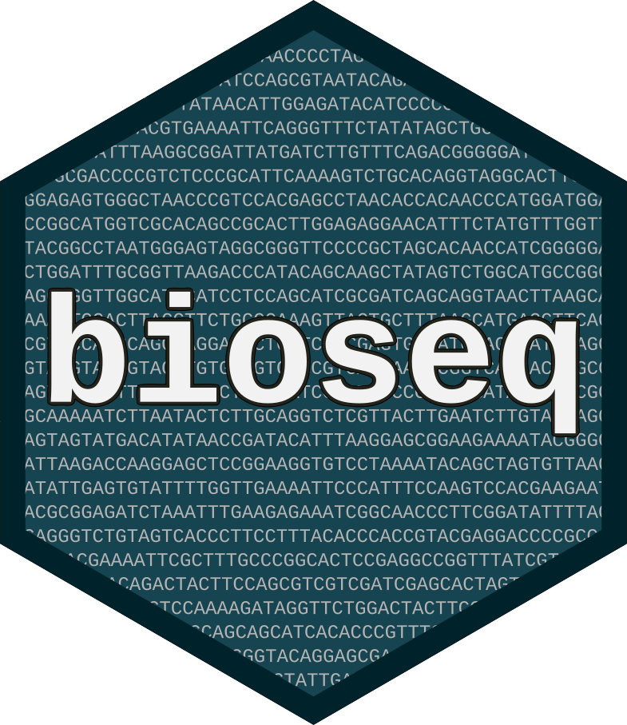

The purpose of bioseq is to provide a collection of classes and functions for biological sequence manipulation in R. The package provides simple S3 classes for sequences that are suitable for inclusion in a data frame and that can be analysed using the dplyr grammar and other tidyverse tools.
Installation
You can install the development version of bioseq from GitHub with:
remotes::install_github("fkeck/bioseq")Tutorials
There are two vignettes available to get started with the package:
- Introduction to the
bioseqpackage - Cleaning and exploring NCBI data with the
bioseqpackage
Citation
If you use bioseq please cite Keck F. (2020) Handling biological sequences in R with the bioseq package. Methods in Ecology and Evolution. doi:10.1111/2041-210X.13490